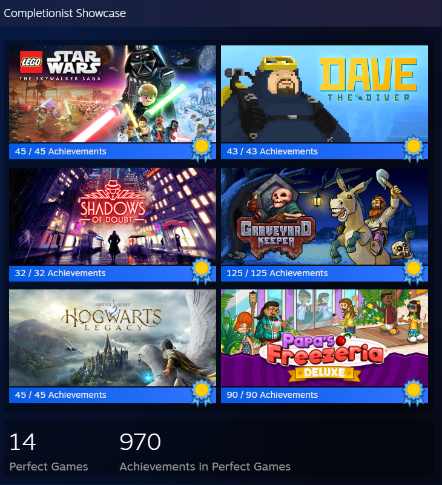

Hobbies
Two of my favorite hobbies are playing video games and watching soccer.
Video Games
I enjoy playing a variety of video games, including roguelikes, story games, and simulators.
I'm also big into 100%ing games, which means completing every achievement that a game has to offer.
This image showcases a handful of my favorite games that I've 100%ed, including the total number of official recognized achievements as well as the total number across these 100%s.
| Game | Time to Complete | Achievements |
|---|---|---|
| LEGO Star Wars: The Skywalker Saga | 70 hours | 45 |
| Hogwarts Legacy | 67 hours | 45 |
| Graveyard Keeper | 64 hours | 125 |
| Shadows of Doubt | 39 hours | 32 |
| Dave the Diver | 34 hours | 43 |
Soccer
My favorite soccer team is Arsenal.
I've been a fan of Arsenal for many years and tune in to their matches whenever I can.
They play in the Premier League (England's top tier of professional soccer), which means that timezones can often make it difficult.